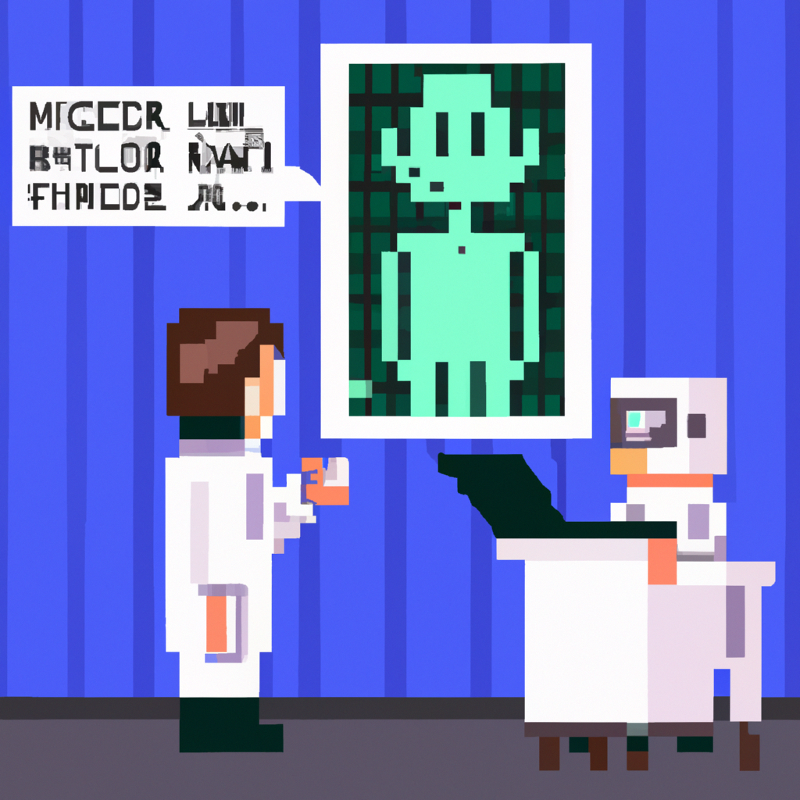

Why AI will never replace the radiologist
Radiology has long been a field that has been seen as ripe for automation. With the advent of artificial intelligence (AI) and machine learning, some have even suggested that AI could soon replace the role of the radiologist.
However, I believe that this is an overly optimistic view of the situation. AI and machine learning have their advantages but there are several reasons why they could never replace the radiologist.
First, AI and machine learning systems can only process information that is given to them. This means that they cannot make connections or draw conclusions that are not explicitly programmed into them. A radiologist, on the other hand, can draw on their experience and training to make connections and draw conclusions that the AI could never make.
Second, AI and machine learning rely on large datasets in order to learn and make predictions. Radiologists, however, can look at a single image and be able to draw conclusions. This level of detail and experience cannot be replicated by AI and machine learning.
Finally, AI and machine learning systems will always be limited by their programming. A radiologist, on the other hand, can use their judgment to make decisions that are not explicitly programmed. This is a key part of the radiologist’s job and something that AI and machine learning can never replicate.
In conclusion, I believe that AI and machine learning will never replace the radiologist. While these technologies have their advantages, radiologists bring a level of experience and judgment to the job that AI and machine learning can never match.